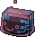
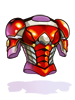
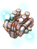

King's Heels
| This quest or instance is repeatable. | ||
|---|---|---|
| Cooldown | Tickets Available | |
|
Resets at 0:00 |
Solo: 1 | Party: 2 |
Overview
| Requirements | |
|---|---|
| Base Level: | 130 |
| Starting Point: | verus04 115/136 |
| Rewards | |
| Experience: | - |
| Items: |  3-6 Charleston Component 3-6 Charleston Component 0-5 Huge Metal Scrap 0-5 Huge Metal Scrap 1-4 Old Fuel Tank 1-4 Old Fuel Tank
|
Doctor Magnatum The Third found a crack in Verus and felt something powerful from it.
After doing some excavations, a lot of monster cards ejected from it.
Data from them was unknown and almost all were damaged, only a few remained intact to be used to research data.
Can you help him with his research?
Walkthrough
- Go to Verus (or Warper>Instance>King's Heels) and talk to Doctor Magnatum (
verus04 115/136). He needs your help with his research. - Talk to him to help and enter the instance.
Optional
- Talk to the Notice close to
/navi [email protected] 122/134and accept the quest to kill 50 Step for 25M Base EXP, 7.5M Job EXP, and 5 Charleston Component. Reward can be obtained after killing the MVP Charleston Ingrata, at the end of the instance, by talking to the Insurance Check NPC before leaving the instance.
Note: In officials monsters in this instance drop Gold Cards on the floor. Since it's an hassle to grab one by one, they were customized to be delivered at the end of the instance, when you leave it through a npc.
The Summoning
- Talk to Leviathan Ingrata at
/navi [email protected] 122/134to start. - She will try to summon a Limited Booster but instead summoned something else that seems human - you, the player (or the party).
- She will try another time after a brief discussion with Ziz Ingrata and tell us that she is the Duelist of the 'Bright House of Gold'
- At this point the conversation will stop and Normal Booster A and Normal Booster B will be summoned. Kill all to proceed with the instance.
- Leviathan Ingrata wants to try again to summon the card she wanted but since no summon points are left, it's Ziz's turn to do that.
- At this point a bunch of Experience Card and Limited Booster B are summoned. Kill all to continue with the instance.
- Ziz said that her summon failed, the Super Mega Ultra Rare Card didn't appeared, but since there is enough cards, according Leviathan, everything is fine. Ziz doesn't enjoy the answer and since she's now helping, she decides to go deep and continue with the research.

We need to go deep
- Enter the recently opened warp and talk to Leviathan Ingrata. She will ask to collect enough resources to get a Beta Booster. This means that she asked us to kill 5 Resource Booster (Lockstep) and they're in the same place as in Charleston Crisis.
- Note: If you have never done Charleston Crisis, you can talk to Ziz Ingrata and she will show you where they're
- After getting enough resources, go the Synthesis Room (
/navi [email protected] 141/199) and talk to Ziz Ingrata.
Let's play an old Artifact game
- We're now working with Ziz and Leviathan Ingrata. Due to that, Ziz asked us to play a little game that starts in that exact place where we stand and ends at Charleston's Artifact game at the top of the instance.
- She will threat you during the conversation but don't worry, it's just a prank, bro.
- At this point Piece of Booster monsters are summoned. Kill them all until an announce related to the summoning of Beta Starters appear.
- Enter the warp at
/navi [email protected] 104/220and let's advance in the direction of the Beta Starters. - Enter the warp at
/navi [email protected] 211/195and advance to the next zone. Kill the 1st Beta Starter at the/navi [email protected] 284/193zone. - Continue your normal way down until you find the next warp and in the next zone kill the 2nd Beta Starter at the
/navi [email protected] 241/39zone. - Go back and continue walking left. Enter the warp and continue walking in the same path until you find the 3rd Beta Starter at the
/navi [email protected] 33/192zone. - Enter the warp, go left and kill the 4th Beta Starter at the
/navi [email protected] 20/273zone. The old Artifact game is now unlocked.
Sacrifices lead to hacks and slashes
- Go to the
/navi [email protected] 128/270zone. Get ready because MVP is going to appear soon. - Talk to Leviathan and a small conversation will start.
- Ziz wants to hack the game but Leviathan complains about the consequences of that if she gets caught.
- Ziz asks her if she actually read the ToS but Leviathan doesn't care, she simply doesn't enjoy seeing cheats, hacks, and other stuff happening there.
- Ziz doesn't care and continues. She uses the 4 rare cards from the 4 Beta starters that we killed as a sacrifice to summon Charleston.
- At this point the MVP Charleston Ingrata appears:
- It's advised to pull it to a corner of that zone to survive the explosions in the area.
- No matter what you do, don't leave that zone with the MVP or it will disappear and reappear full healed.
- After killing the MVP Ziz, Leviathan, and an Insurance Check NPC will appear.
- Note: If you did the optional quest, talk to the Insurance Check NPC at
/navi [email protected] 128/277to get its reward:- 25M Base EXP
- 7.5M Job EXP
- 5 Charleston Component
Noses, kisses, and goodbyes
- Talk to Ziz Ingrata and select Go back.
- She will press your nose and you will now leave the instance and be rewarded with 3-4 Charleston Component, 0-3 Huge Metal Scrap, and 1-4 Old Fuel Tank.
Enemies
Note:
- Most monsters in this instance appear with different names depending on where you're.
- Although the different names are listed and separated, one click in each directs you to the same.
| Image | Name | Level | HP | Size / Race / Element |
|---|---|---|---|---|
|  | Step Experience Card |
130 | 55,403 | Small / Demon / Neutral 1 |

|
Normal Booster A | 131 | 71,056 | Medium / Demon / Neutral 2 |

|
Resource Booster 1st Beta Starter 2nd Beta Starter 3rd Beta Starter 4thBeta Starter |
132 | 73,644 | Medium / Demon / Neutral 1 |

|
Normal Booster B Limited Booster B Free Card Distributor Piece of Beta Booster |
133 | 68,018 | Medium / Demon / Neutral 2 |

|
Charleston Ingrata
|
145 | 23,671,401 | Large / Demon / Neutral 3 |
Cards
| Card | Type | Description |
|---|---|---|
| Weapon Card | Axe Boomerang damage +30%.
If refined to +10 or higher, additional Axe Boomerang damage +30%. | |
| Weapon Card | Arms Cannon damage +20%.
If refined to +10 or higher, additional Arms Cannon damage +20%. If equipped with Kickstep Card, Mado does not consume Fuel. | |
| Armor Card | MaxHP +8%.
If equipped by Mechanic class, reduce long ranged physical damage received by 30%. | |
| Weapon Card | Vulcan Arm damage +10%.
If refined to +10 or higher, additional Vulcan Arm damage +20%. If equipped with Kickstep Card, Mado does not consume Fuel. | |
| Weapon Card | MaxSP -300.
High chance of breaking the enemy's armor when using melee attacks. If equipped with Kickstep Card, Mado does not consume Fuel. |
Obtainable Equipments
Please note that most of these pieces are available through the Verus Equipment Exchange!
| Supplement Equipment | |||
|---|---|---|---|
| Image | Name | Slot | Description |
|  | STR Supplement Equipment | Armor | DEF + 80, ATK + 5%.
ATK + 1% every 4 upgrade levels of the item. Set Bonus: AGI Supplement Equipment & STR Supplement Equipment; ATK + 30. Set Bonus: VIT Supplement Equipment & STR Supplement Equipment; Axe Tornado damage +25%. Set Bonus: DEX Supplement Equipment & STR Supplement Equipment; Axe Boomerang damage + 100%. Mechanic only. |

|
VIT Supplement Equipment [1] | Garment | DEF + 20, Max HP + 6%.
Max HP + 1% every 2 upgrade levels of the item. If upgrade level is +9 or higher, HP Recovery + 50% Set Bonus: VIT Supplement Equipment & STR Supplement Equipment; Axe Tornado damage +25%. Mechanic only. |

|
AGI Supplement Equipment [1] | Footgear | DEF + 25, ASPD + 6%.
Max HP + 1% every 2 upgrade levels of the item. If upgrade level is +4 or higher, ASPD + 1%. Set Bonus: AGI Supplement Equipment & STR Supplement Equipment; ATK +30. Mechanic only. |

|
DEX Supplement Equipment [1] | Accessory | Cast Delay - 10%.
Variable Casting Time - 10%. Reduces the SP cost of skills by 10%. Set Bonus: DEX Supplement Equipment & STR Supplement Equipment: Axe Boomerang damage +100%. Reduces the cooldown of Axe Boomerang by 2 seconds. Mechanic only. |
| Reinforced Parts | |||
|---|---|---|---|
| Image | Name | Slot | Description |

|
Reinforced Parts - Plate | Armor | DEF + 110, Reduces damage received from Small and Medium size enemies by 10%.
Indestructible. If upgrade level is +7 or higher, reduces damage received from Large size enemies by 10%. If upgrade level is +9 or higher, reduces damage received from Small and Medium size enemies by 5%. Set Bonus: Reinforced Parts - Plate, Reinforced Parts - Engine, Reinforced Parts - Booster, Reinforced Parts - Gun Barrel; Arm Cannon damage + 50%. Mechanic only. |
|  | Reinforced Parts - Engine [1] | Garment | DEF + 25, Cast Delay - 10%
If upgrade level is +7 or higher, reduces damage received from Neutral property attacks by 10%. If upgrade level is +9 or higher, Cast Delay - 10% Set Bonus: Reinforced Parts - Plate, Reinforced Parts - Engine, Reinforced Parts - Booster, Reinforced Parts - Gun Barrel; Arm Cannon damage + 50%. Mechanic only. |

|
Reinforced Parts - Booster [1] | Footgear | DEF + 23, Reduces the SP cost of Hover by 15.
If upgrade level is +7 or higher, reduces the SP cost of Acceleration by 20. Set Bonus: Reinforced Parts - Plate, Reinforced Parts - Engine, Reinforced Parts - Booster, Reinforced Parts - Gun Barrel; Arm Cannon damage + 50%. Mechanic only. |

|
Reinforced Parts - Gun Barrel [1] | Accessory | ATK + 4%
HIT + 10 Knuckle Boost damage +25%. Set Bonus: Reinforced Parts - Plate, Reinforced Parts - Engine, Reinforced Parts - Booster, Reinforced Parts - Gun Barrel; Arm Cannon damage + 50%. Mechanic only. |
| Excellion Gear | |||
|---|---|---|---|
| Image | Name | Slot | Description |

|
Excellion Wing | Garment | A power wing made from the lost technology of a ruined laboratory.
Perfect Dodge + 8. If level 130 or above, additional Perfect Dodge + 2. Increase Flee by 2 for every refine upgrade. Can be enchanted with various unique reactors [+ Excellion Suit] Reduce skill delay by 10%. If level 130 or above, additional skill delay reduction by 10%. Perfect Dodge + 6. |

|
Excellion Suit | Armor | A power suit made from the lost technology of a ruined laboratory.
VIT + 6. If level 130 or above, additional VIT + 4. Increase Max HP by 4% for every 3 refine upgrades. This item is indestructible in battle. Can be enchanted with various unique reactors [+ Excellion Wing] Reduce skill delay by 10%. If level 130 or above, additional skill delay reduction by 10%. Perfect Dodge + 6. |
| Weapons | |||
|---|---|---|---|
| Image | Name | Slot | Description |

|
Pile Bunker P | Mace | ATK + 450
ATK + 5 every upgrade level of the item. Mechanic only. |

|
Pile Bunker S [1] | Mace | ATK + 400
Attack Speed +1% per 2 upgrade levels of the item. Mechanic only. |

|
Pile Bunker T [1] | Mace | ATK + 400
Reduces the SP cost of skills by 1% every upgrade level of the item. Mechanic only. |

|
Tornado Axe [1] | Two Handed Axe | ATK + 350
Reduces the cooldown of Axe Tornado by 1 second. |

|
Gigantic Blade [1] | Two Handed Sword | ATK + 300, ASPD - 15%.
Increases critical damage on targets by 1% per upgrade level of the item. Indestructible. If base STR is 110 or lower, ATK - 250 |

|
Robot's Mechanical Arm [2] | Mace | ATK + 195, CRIT + 20.
Indestructible. |
Enchants
It's possible to enchant the Mechanic Items by talking with Ingrata M (verus04,71,106).
Enchanting requires  1 Charleston Component and 100,000 zeny.
1 Charleston Component and 100,000 zeny.
Enchants can be reset by paying 1 Charleston Component and 100,000 zeny.
Armor, footgear, and garment can be enchanted in 3 slots and items refined to +9 and above have wider options.
Accessories can be enchanted in 2 slots.
Weapons ask for special items called "Charleston Upgrade Part" and can you exchange 175 Gold Card and 15 Charleston Component for one. You can choose between  Charleston Upgrade Part (Melee) and Charleston Upgrade Part (Range) and then use it to apply 2 random enchants of that type on the desirable weapon.
Charleston Upgrade Part (Melee) and Charleston Upgrade Part (Range) and then use it to apply 2 random enchants of that type on the desirable weapon.
List of Enchants
Armor, Garments, and Accessories
| Items | Enchants Possible | +8 below Enchantment list option | +9 Enchantment list options | |
|---|---|---|---|---|
| Regular Upgrade | Superior Upgrade | |||
 Reinforced Parts - Booster [1] Reinforced Parts - Booster [1]
|
3 | STR / AGI / VIT / DEX 1~2, Spell 1, ASPD Lv.1 |
STR / AGI / VIT / DEX 2~3, Spell 1~2, ASPD Lv.1~2 | |
 AGI Supplement Equipment [1] AGI Supplement Equipment [1]
|
3 | STR / AGI / VIT / DEX 1~2, ASPD Lv.1 |
STR / AGI / VIT / DEX 2~3, ASPD Lv.1~2 | |
 Reinforced Parts - Engine [1] Reinforced Parts - Engine [1]
|
3 | STR / AGI / VIT / DEX / LUK 1~2, Expert Archer 1 |
STR / AGI / VIT / INT / DEX / LUK 2~3, Expert Archer 1~3 | |
 VIT Supplement Equipment [1] VIT Supplement Equipment [1]
|
3 | STR / AGI / VIT / INT / DEX / LUK 1~2, Expert Archer 1 |
STR / AGI / VIT / INT / DEX / LUK 2~3, Expert Archer 1~3 | |
 Reinforced Parts - Plate Reinforced Parts - Plate
|
3 | AGI / LUK 1~2, ASPD Lv.1~2, Flee 3~12 |
Speed: AGI / LUK 2~3, ASPD Lv.1~2, Flee 3~12 |
Attack: STR / DEX 2~3, Fighting Spirit 1-2, Expert Archer 1~3 |
 STR Supplement Equipment STR Supplement Equipment
|
3 | AGI / LUK 1~3, ASPD Lv.1~2, Flee 3~12 |
Speed: AGI / LUK 2~3, ASPD Lv.1~2, Flee 3~12 |
Defense: VIT 2~3, MHP 1~3%, Neutral Resist 1~2, DEF 6~9 |
 Reinforced Parts - Gun Barrel [1] Reinforced Parts - Gun Barrel [1]
|
2 | STR / AGI / VIT / INT / DEX 1~2, Spell 1~2, ASPD Lv.1 |
n/a | |
 DEX Supplement Equipment [1] DEX Supplement Equipment [1]
|
2 | STR / AGI / VIT / INT / DEX 1~2, Spell 1~2, ASPD Lv.1 |
n/a | |
Weapons
| Weapons | Enchant List Option | |||
|---|---|---|---|---|
| Melee | Ranged | |||
| Enchant #1 | ||||
|
Weapon Property: [Element] | ||||
|
Physical damage to [element] enemies +1~20% | ||||
|
Physical damage to [size] enemies +1~20% | ||||
|
Critical damage +5~20% | ||||
|
ASPD +5~15% | ||||
|
HIT +1~15 | ||||
|
CRIT +1~15% | ||||
|
ASPD +1 | ||||
|
Negates Size Penalty | ||||
|
ATK +3~7% |
Ranged Damage +1~15% | |||
| Enchant #2 | ||||
|
Physical damage to [race] enemies +1~20% | ||||
|
Physical damage to Normal enemies +1~10% | ||||
|
Physical damage to Boss enemies +1~10% | ||||
|
Delay -1~5% | ||||


References for [element], [race], [size], and Weapon property: [element]
Enemy [element]'s Enemy [race]'s Enemy [size]'s Weapon property: [element]'s - Neutral
- Water
- Earth
- Fire
- Wind
- Poison
- Holy
- Shadow
- Ghost
- Undead
- Angel
- Brute
- Demi-Human
- Demon
- Dragon
- Fish
- Formless
- Insect
- Plant
- Undead
- Small
- Medium
- Large
- Water
- Earth
- Fire
- Wind
- Holy
- Shadow